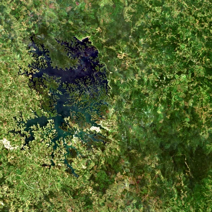
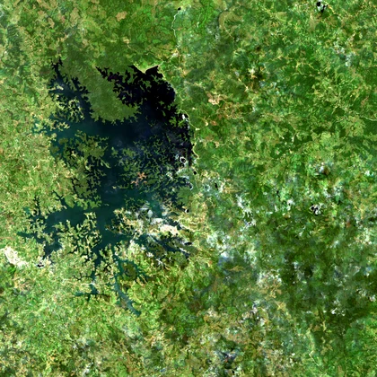

Capítulo 01 El embalse que se llena con gas
El Niño y la luz.
Del calentamiento del Pacífico al embalse de Peñol–Guatapé. Recorre el fenómeno mes a mes y sigue su huella en la electricidad de Colombia.
Empezar el recorridoPeñol–Guatapé, Antioquia · Render de Blender
Pacífico tropical · 2023–2026
El Niño, mes a mes.
Sigue la mancha cálida en la franja ecuatorial. Desplázate por la página o mueve el control para cambiar de mes.

Fuente NOAA OISST v2.1 · Serie diaria Niño 3.4
Antioquia · Cuenca del río Nare
Vuela sobre Guatapé.
Recorre el agua y las montañas con el terreno de la escena original de Blender.
Sentinel-2 · Dos periodos
El borde del agua.
Mueve la cortina para observar el mismo embalse en dos composiciones satelitales.


20222026CHIRPS · XM
Del agua a la energía.
La lluvia alimenta los ríos. Cuando bajan los aportes, las centrales térmicas, incluidas las de gas, pueden cubrir parte de la demanda y aliviar el uso de los embalses.
Lluvia mensual en Colombia
Cargando datos…
Datos y video
Catálogo de recursos
Descarga los datos de los tres capítulos y consulta su cobertura y procedencia.
Cargando catálogo…